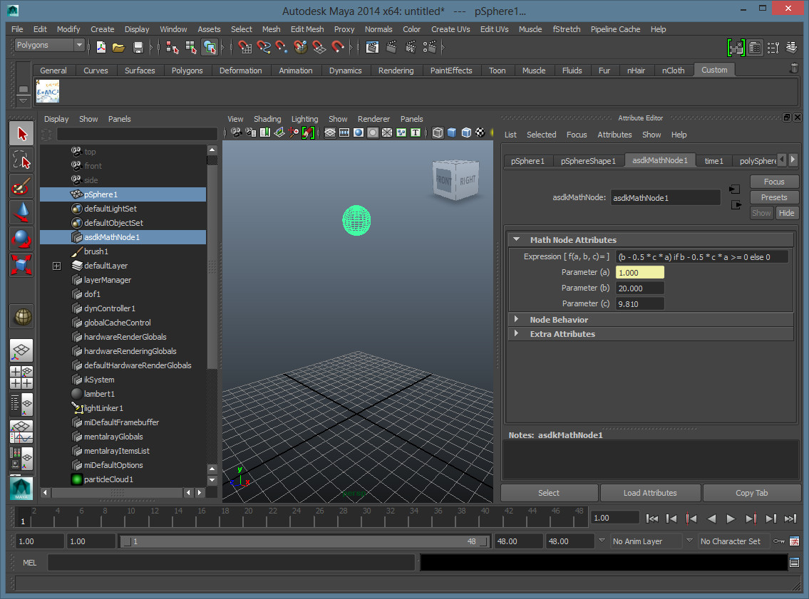

MathNode
Autodesk Maya MathNode plug-in.
This plug-in can be used to evaluate a (free-form) mathematical expression based on the input attribute values.
The computed results will be returned as a float on the output attribute and can be connected to any other node
in the Maya DG. Commonly used functions are shown in the list "Mathematical Functions" in the Python help.
There are also some constants available, such as pi (the ratio of the circumference of a circle to its diameter),
e (the base of the natural logarithms), etc...
You can also include limited python scripts and functions on the evaluated expression as long you use an
expression which can be interpreted as a Maya Python script and follows the DG guidelines for writing nodes.
This plug-in can be used in place of the Maya 'Expression' system. Maya's evaluation of 'Expressions' depends on the contents
of the expression – sometimes you have to force evaluation - whereas, for a node, the Maya DG will always do it for you when needed.
Debugging a Maya 'Expression' is not easy either (no tools are available), and requires a knowledge of MEL.
Using the MathNode plug-in, you can use a Python debugger to debug the Node evaluation (see the Blog post
for instructions on how to do that. In any case, it is always preferable to use self-contained nodes and connections over expressions whenever possible.
Getting Started
|Install/Uninstall|Additional Information|Contact|Version History
Getting Started
To launch the plug-in, use the following command(s)
MEL command: `createNode asdkMathNode;`
Creates a new MathNode node in the Maya DG and selects it.
Usage
The MathNode shelve button creates a new Math node in the Maya DG and selects it.
Expression:
An expression can be as simple as 'b - 0.5 * c * a' or more complex with conditional statement like '(b - 0.5 * c * a) if b - 0.5 * c * a >= 0 else 0'
(in this last example, the formula calculates the Y position of a ball falling until the sphere hits the floor at Y=0).
Input attributes:
The (a, b, c) input attributes can either be set as a static keyable value, or connected using the 'Connection Editor'.
Output attribute:
The 'result' output attribute will contain the expression result and can be connected to other Maya nodes using the 'Connection Editor'.
MathNode attributes are keyable.
You can get/set MathNode' attributes using MEL or Python.
Screenshots

Sphere falling example
Installation and Uninstallation
The installer that ran when you downloaded this plug-in from Maya Exchange
has already installed the plug-in.
Windows only: To uninstall this plug-in, simply rerun the installer by downloading it again
from Exchange, and select the 'Uninstall' button, or you can uninstall it from
'Control Panel\Programs\Programs and Features' (Windows 7) or Add/Remove
Programs (Windows XP), just as you would uninstall any other application from
your system. The panel on the Plug-ins tab will not be removed until Maya is restarted.
Linux and OSX: To uninstall this plug-in, simply delete the module directory from your system.
The panel on the Plug-ins tab will not be removed until Maya is restarted.
Available on
 |  |  |
| Windows | Mac OSX | Linux |
Additional Information
This plug-in was written by Cyrille Fauvel - Autodesk Developer Network.
Known Issues
None.
For more information on developing with Maya, please visit
the Maya
Developer Center.
Support Information
If you do encounter issues the please contact Autodesk either by email or phone, the details are listed below:
Telephone:
Email: labs.plugins@autodesk.com
Version History